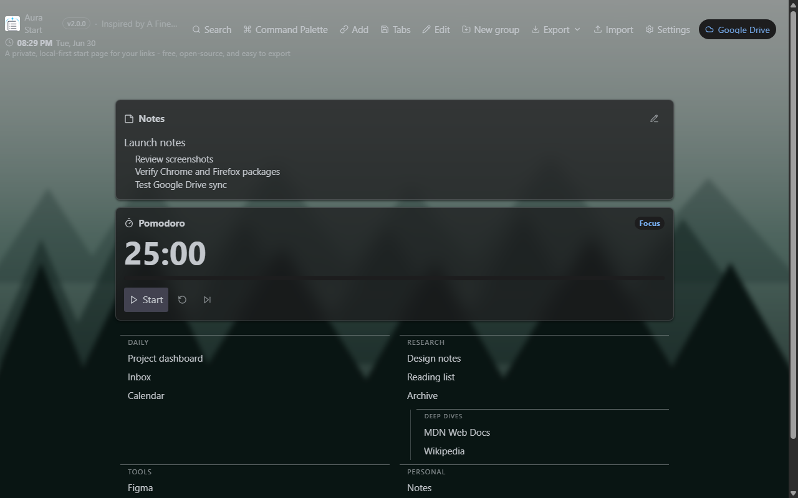
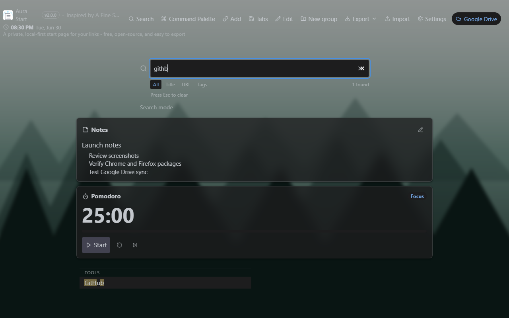
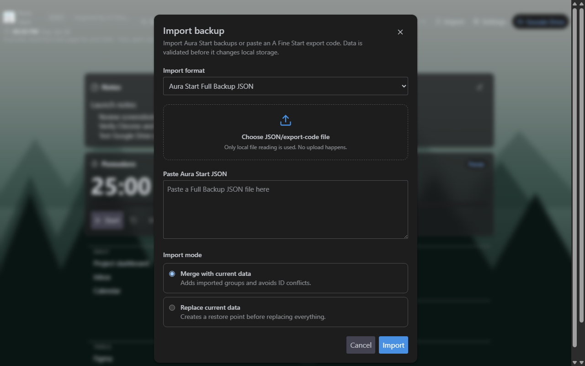
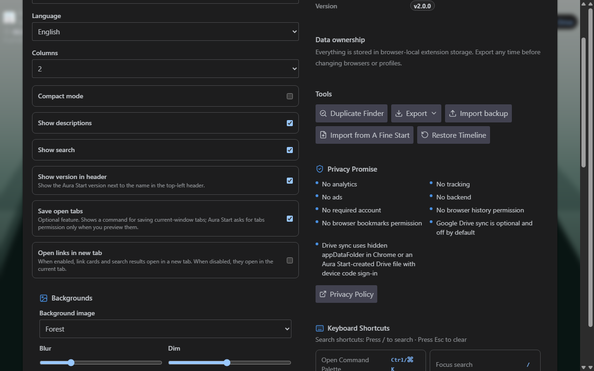
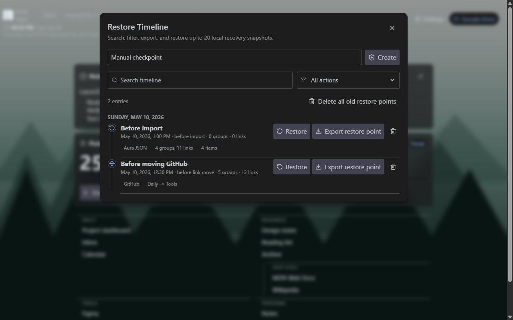
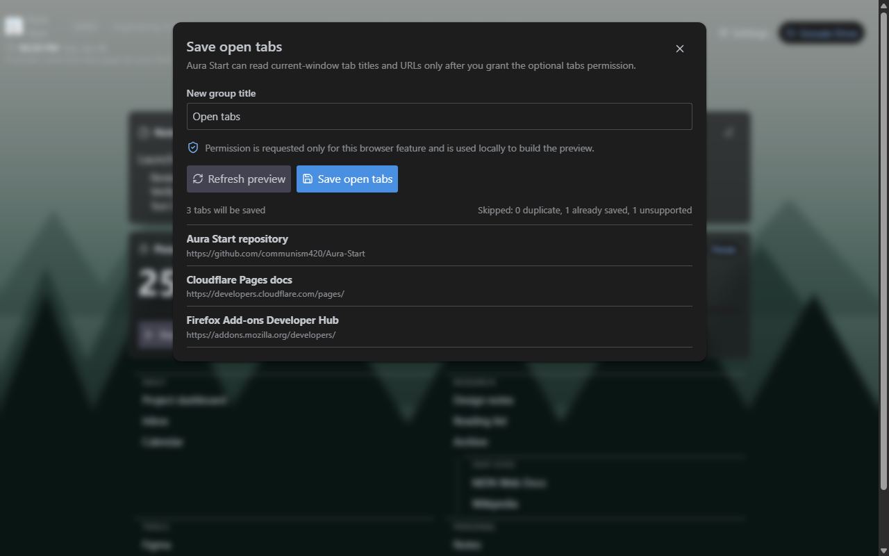
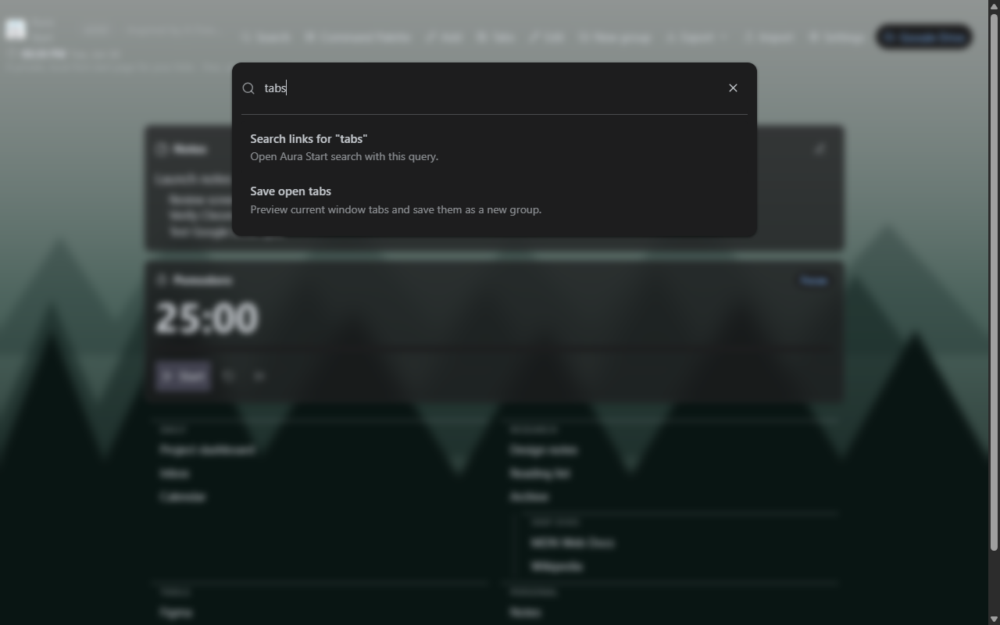

New tab
Nested Groups and Widgets
The real new tab page with nested groups, a built-in background, header clock, notes, Pomodoro, and Google Drive status.
A closer look at nested groups, fuzzy search, import/export, backgrounds, widgets, Restore Timeline, Save open tabs, and keyboard-first commands.
These images are refreshed from the current Aura Start 2.0.0 extension UI with non-personal demo data. They are not drawn mockups.

The real new tab page with nested groups, a built-in background, header clock, notes, Pomodoro, and Google Drive status.

Search by title, URL, description, or tags, with typo-tolerant matching, result counts, and quick filters.

The real import/export workflow for Full Backup JSON, browser bookmarks HTML, Markdown, CSV, and A Fine Start-compatible migration.

Settings for built-in or local backgrounds, blur, dim, positioning, clock, Markdown notes, and Pomodoro.

The real Restore Timeline with grouped snapshots, action filters, search, export, and confirmed restore.

Preview current-window tabs, skip duplicates and unsupported URLs, then save the remaining links into a new group.

The real Command Palette with fuzzy command search and a handoff into link search.